GORMPO
Penalize rollouts that leave the data’s support
+Click to show details
Sparse D4RLMedium-expert, 22–28% of an unsafe region removed
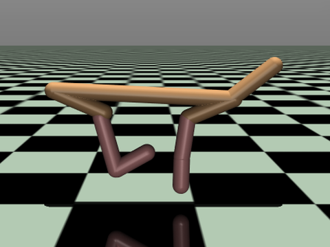
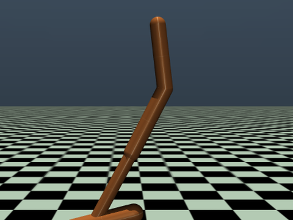
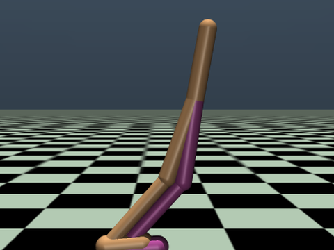
density
action


10.10.010.001
reward
reward
reward
halfcheetah
hopper
walker2d
Our medical datasetCardiogenic shock, 379 patients on MCS
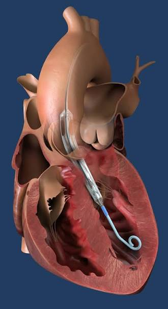
Impella

sparse reward–action
Policy evaluation
MuJoCo tasks+ click a dataset to see results
MOBILE
GORMPO
return gain
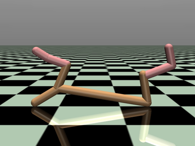
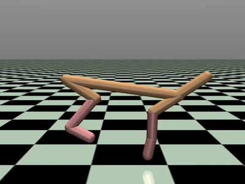
halfcheetah
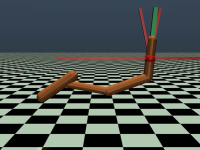
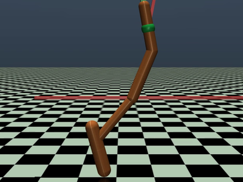
hopper
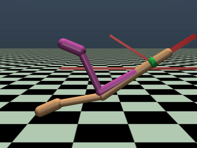
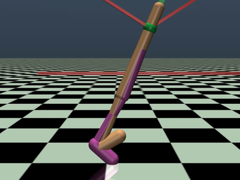
walker2d
Impella weaning+ click a dataset to see results
✓Blood pressure stays above 60: the patient is stable, so the pump should be weaned.

CORMPO
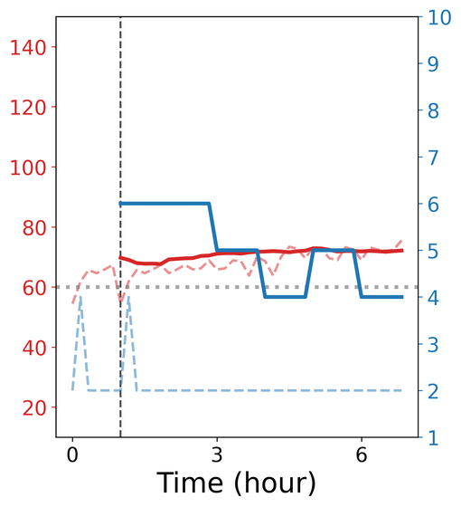
no MOBILE-basedmedical policy
GORMPO
blood pressureobservedP-levelclinician decisioncritical threshold